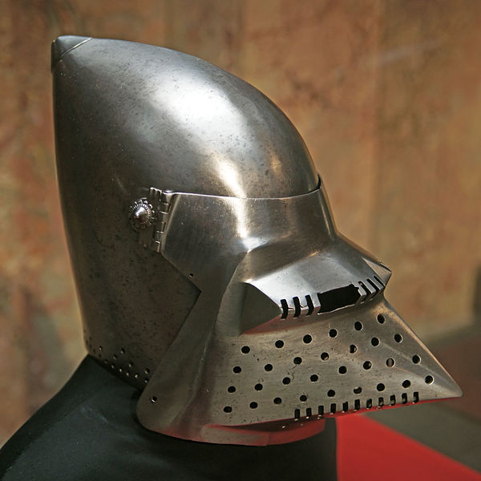
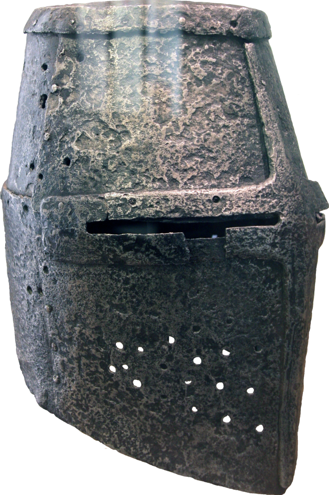
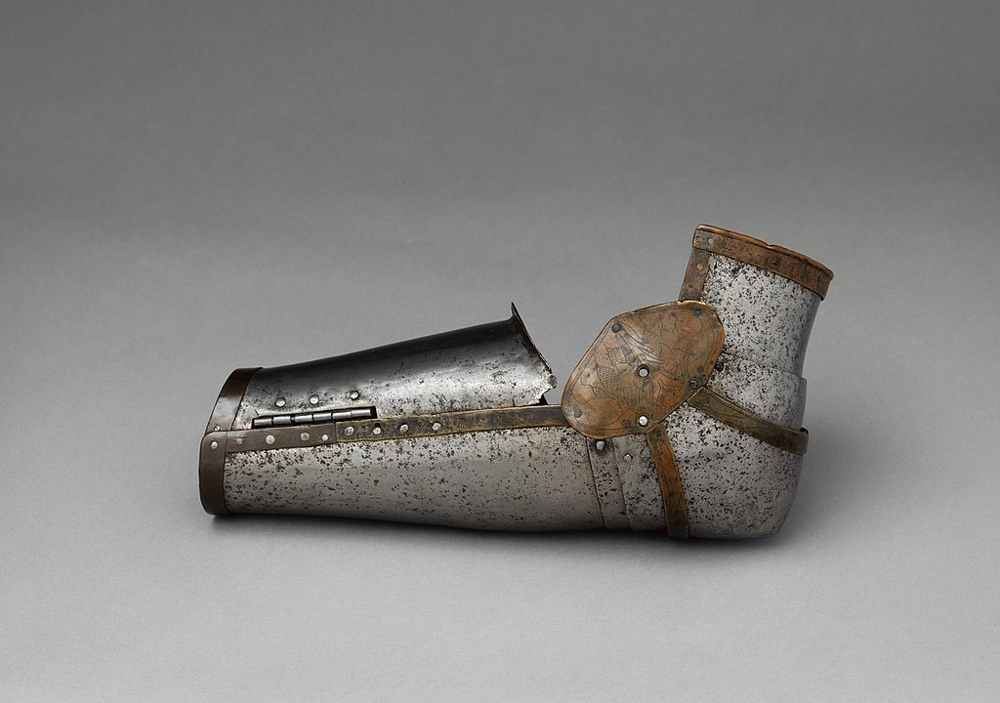
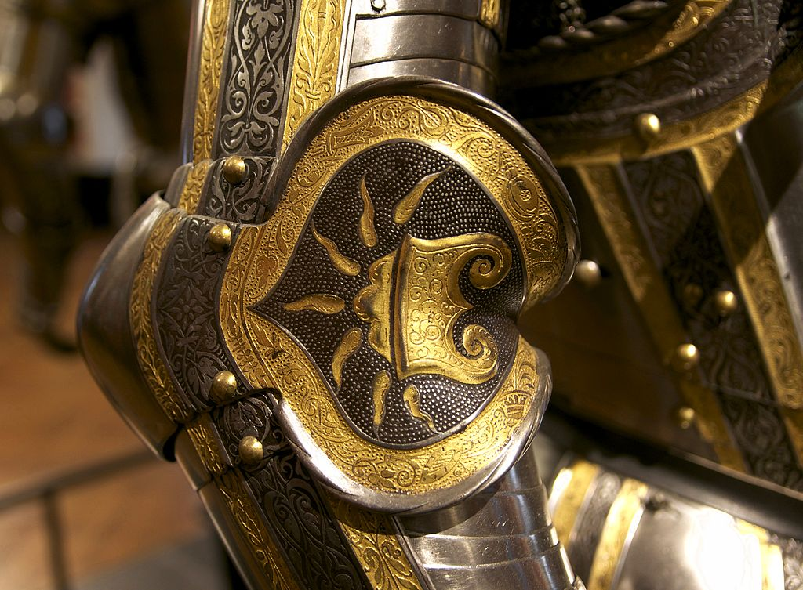

Splint armor and Helmets
Splint armor and helmets are probably the most important of armors. Splint armor blocks your arms and legs, and helmets block your head. It's pretty self explanatory why you need to protect your head when someone is swinging a bladed or blunt weapon at it.
Barbute
This is a barbute, and Italian helmet used in the 15th-century. It's a fairly protective helmet considering the giant opening. The main feature of this helmet is that it's one of the earliest helmets to use a curved top to keep your head from being cut.
Sallet

This is a sallet, it was used during the mid 15th-century. A sallet helmet is very protective, especially with a bevor. A sallet has a curve on the back. It is the successor to the bascinet in Italy
Bascinet
The bascinet was used for a fairly long time. It was later in the middle ages, and provided a lot of protection and it was one of the first grouping of helmets that had a curve on it to block the head. It is also one of the earliest helmets that had a visor, which was added around the mid 14th-century A.D.
Great Helm
The great helm is a very very old helmet. Used from 1220 to 1350 A.D, this helmet lacked a curved top, so it was easy to cut through. It was a building block in the improvement of European helmets.
Arm Pieces
The vambrace is the main arm protection throughout most of the Medieval times.
Full Arm Guard
This is a combination of a vambrace, pauldron, couter, and a rerebrace. It was the main protection used for the entire arm when people still wore plate armor.